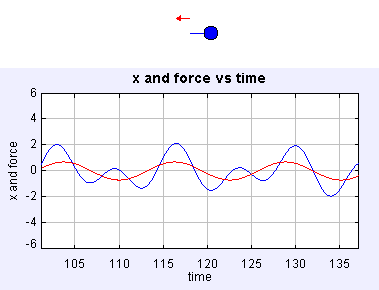

In this simulation, an object that oscillates due to the action of a spring is also the subject of an external periodic force. In this situation, one would expect that the oscillation becomes the sum of both forces, the one resulting from the spring and the external one.

Leave all other parameters as in the initial setting and play with the frequency w. Try the values 0.0, 2.0, 0.5 and 0.85, in this order.
What happens when the frequency of the external force approaches 1? ... The oscillation grows beyond what would be reasonable!
We'll give it a name: resonance, but you should try to explain why it happens.
The final (non-trivial) question is : how does the critical value of w depends on the other parameters: mass, k and A?